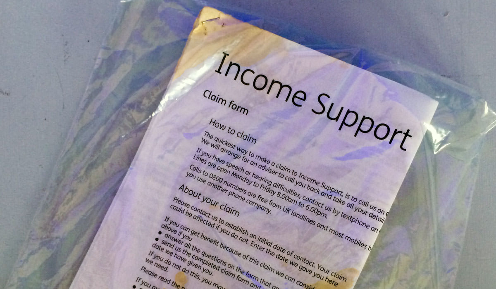
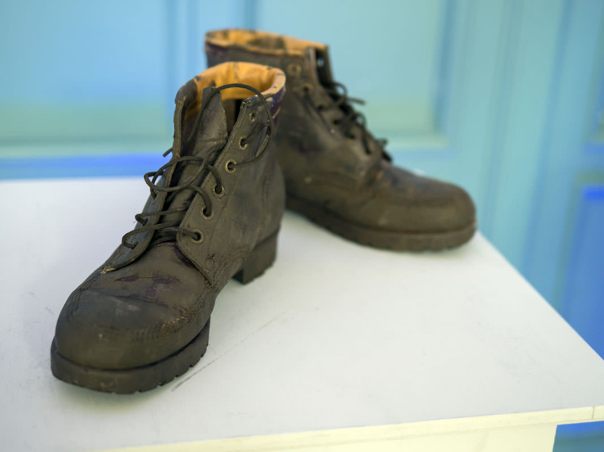
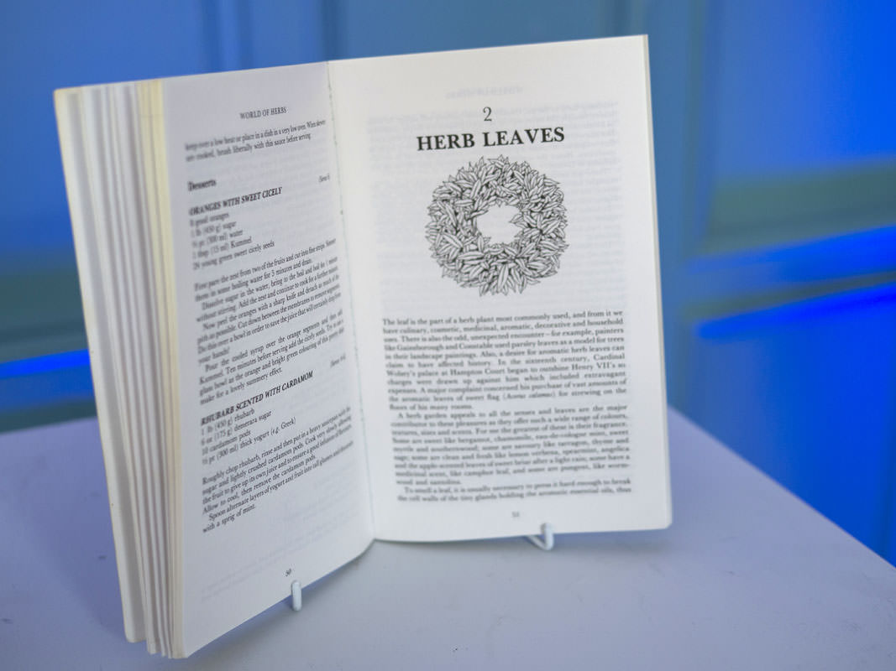
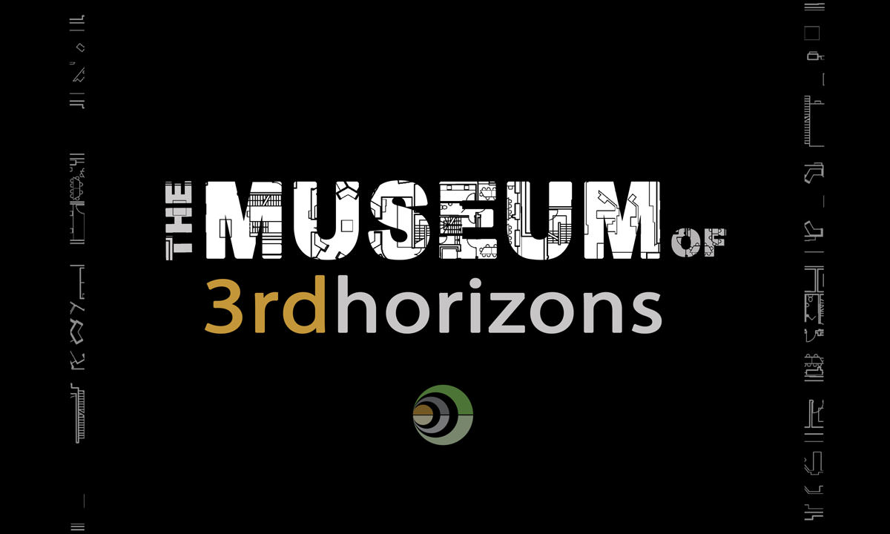
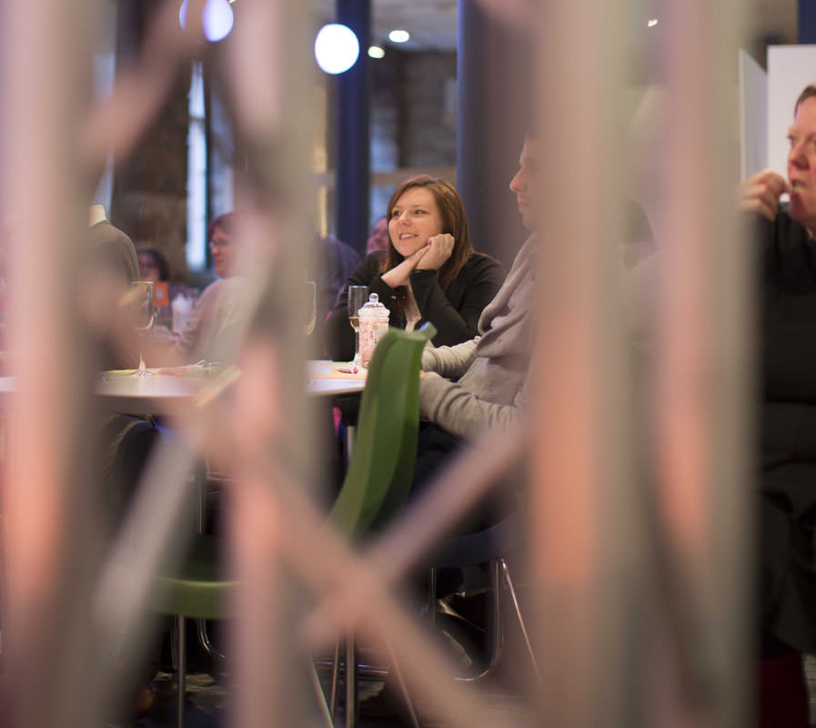
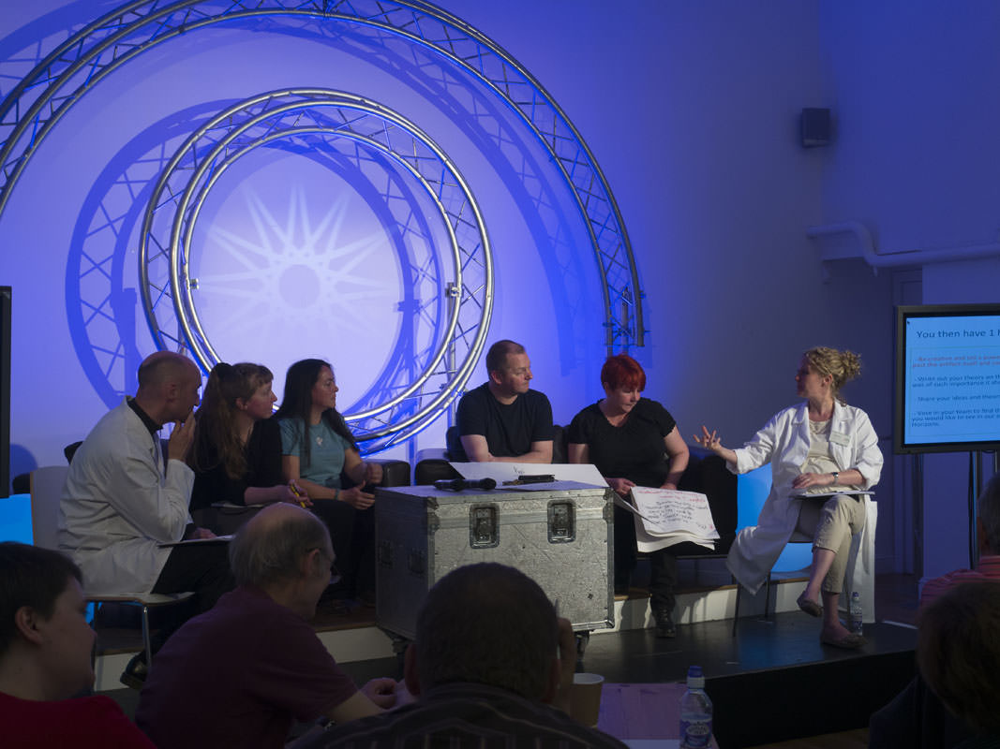
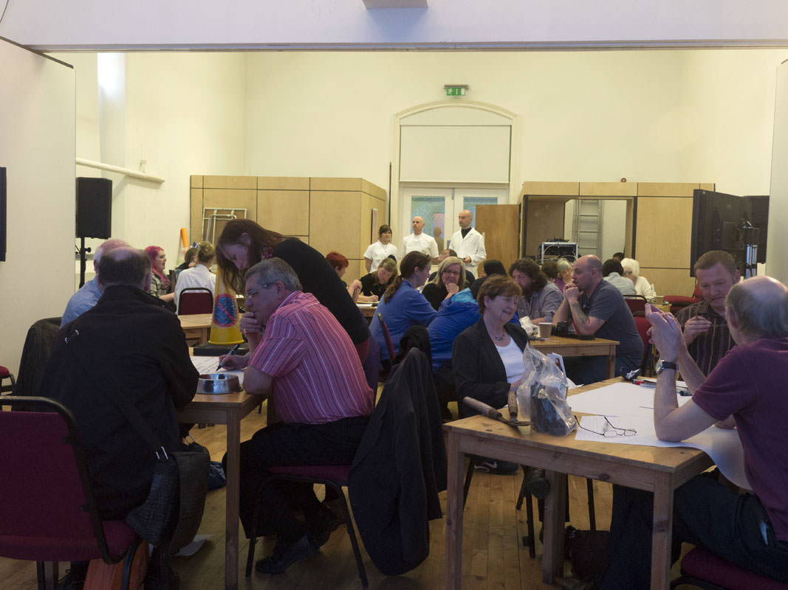
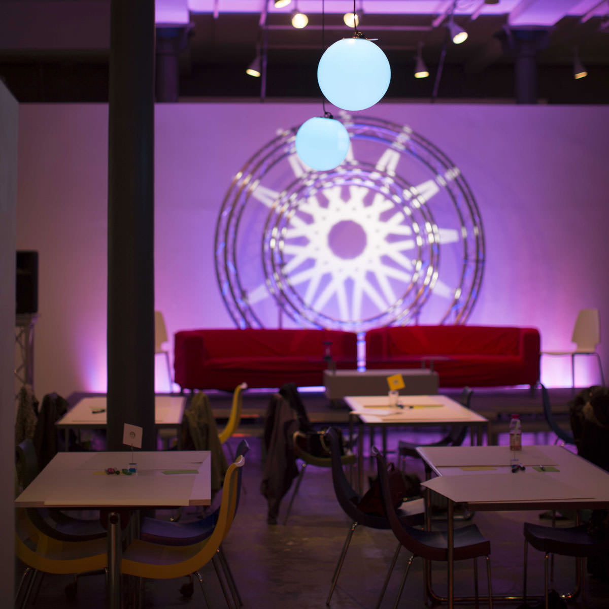

This unique one-day exhibition looks back at Scotland in 2014 and is an important historical reminder of the challenges and opportunities faced by decision makers at the time and those who, back then, relied on 'social services'.
The exhibition artefacts have been brought together from a recent archeological dig from the old town of Penkirton, a typical urban town from 2014. Each artifact sheds light on the realities of life, support and social services back in 2014.
Dr Moira McKay
Museum Director, October 2034
The Museum’s highly acclaimed social blogger, Sandra Sutherland offers a historical and social context for the exhibition:
The Museum’s latest exhibition first opened on 24 October, 2034 and coincides with Scotland’s First Minister historic announcement in the Scottish Parliament this week when she said,
“Today we celebrate the 20th Anniversary of the ‘Social Justice Charter’, which has guided our approach to reducing inequalities for two decades. We can also clearly see today the culmination of a sustained and coordinated drive to develop a new culture of social services. An ethos, she pointed out, of mutual responsibility shared by skilled citizens and a skilled social care workforce. She went on to say “Today is proof that the prevention approach to health and social inequalities, started 20 years ago, in conjunction with public service reform has worked”.
Back in 2014, Scotland was dealing with deeply entrenched social inequalities. There was high levels of child poverty, an ageing population suffering from increased social isolation and a significant number of citizens locked into cycles of offending and imprisonment. And of course we have to remember the economic situation of the time. Many who lived through the long depression following the 2008 collapse of the financial system will recall it as an age of austerity budgets and aggressive welfare reforms.
Of course, today there are far fewer professional boundaries between those who deliver health and social services and far greater emphasis on family and community-centred support. Those who we used to call “social workers” now have a very different role. Their main focus is on enabling individuals and groups of people to come together and support each other. Today’s workforce come from a much broader range of backgrounds including community learning, social innovation and enterprise, health and social care.
And today we have a much larger workforce that includes a greater diversity of roles; personal assistants, self employed carers, volunteers, integration co-ordinators and what has become known as e-support connectors, all play a part in this new model.
The Referendum in 2014 saw a new impetus for change and the Social Justice Charter carried that momentum forward. It included a set of core human rights comprising; welfare entitlements, various national and local entitlements, and greater devolution for local government to work closely with a resurgence of participative democracy and local leadership. It was a landmark moment in the development of our civil society and really set a new agenda across Scotland’s public realm.
There were many issues to overcome in 2014.To start of with there were systemic problems with the old culture of care and social services. Basic things like a lack of time for listening to people or allowing them to build relationships and an over-preoccupation with top-down targets. Many would also say that a blame culture had developed leading professionals to protect themselves and be reluctant to share information across agencies, and that in turn led to poor continuity of care. Personally I feel these factors often led to a mutual lack of respect between service users and providers. And beyond those barriers there were difficulties with how some people perceived the recipients of care.
I think that we do now find some of the attitudes common a generation ago uncomfortable. There were plenty of people around at that time who felt that that those who sought support were some kind of failure; a drain on society. If you review the media of the time it’s full of stories about “scroungers” and in fact a whole sub-culture of reality media grew up demonizing the unemployed and unwell.
We have to remember, in 2014, we had long queues of people at mega foodbanks, a sight we’d never seen before. A third of households in Glasgow in 2014 had no one in employment and many, many people were classified as ‘working poor’. And I think it’s also clear that the frustration and anger at these inequalities and the increasing precariousness of jobs during that long long recession period really drove the change. I also think that political leaders, sensing the limits of their influence, were keen to pass power and responsibility to communities to just try new things and see if they would work.
We started to see more managed risk and learning through experimentation taking place. The support of local leaders who had ‘permission’ to get on and do things, put control back in the hands of ordinary people. Moving the money so that government was financially investing in community support and community leadership set in train the changes we see today.
The 2015 Social Justice Charter gave us the new social contract between state and citizens based around equality and social justice and, very importantly, supported it with a range of policy and financial initiatives. Today we can see the results in a dynamic and innovative range of social services that are highly responsive to the people and communities they serve.
We’ve moved on from the old “management” language of contracts, tenders, targets and competition, to a new “inclusive” language of self directed support, micro-providers, social enterprises and community anchor organisations. Ultimately what started as a reaction to centralized authority and institutional care has become this potent civic movement.
Dr Sandra Sutherland, Social Blogger, The Museum of 3rd Horizons, October 2034
This piece symbolizes the power, responsibility and supposed ‘knowledge’ owned by a small number of ‘professionals’ who can access resources. The keys are prized objects of control and those who have them are reluctant to give them up to others in the community, who they do not see as ‘knowledgeable or capable of managing resources for themselves.’
This item reminds us of how smart phones were viewed in 2014. The piece is a powerful reminder that 20 years ago smart phones were widely used for photos, phone calls and email – some have said it was a world that was ‘technological by default’. However, 2014 marked the beginning of a journey to a ‘supported age of technology’.
This item reminds us of the reality of health care back in 2014. GP surgeries back them were overcrowded and over-used. Provision of health-care was increasingly being out-sourced. For example, pharmacies were routinely giving people ‘home kits’ for people to check their blood pressure. Minor aliment clinics were common.
This piece is illustrative of the reality for many in 2014 and the seemingly never-ending journey of dependency.
However, other experts from 2014 are firmly of the view that the bicycle was a hugely important means of transport - support and transport when needed; a way of getting to a positive destination and getting away from the use of services and dependency.

In 2014 access to social care was highly regulated. Many felt that the culture of provision was geared to constrain and withhold resources rather than to serve the needs of clients.
Assessments for care were conducted through an elaborate process of form filling which keep the user at arms length, an unknown entity.
Now in 2034, face to face services place fresh emphasis on a relationship with the individual and actually delivering support.
In 2014, schools were not as sensitive as they are now in supporting pupils with Aspergers syndrome, ADHD and dyslexia. Such pupils were often misunderstood and branded as troublemakers. The change in attitudes and support over the last 20 years has also been matched by a change of emphasis in education including:

At first sight these boots might look like the work wear once worn by the ship builders of Govan. They are in fact walking boots. Many decades ago workers from the shipyards and other industries organised walking groups for themselves. This activity was both social and healthy.
When these boots were being worn in 2014 many city dwellers felt unconnected with their local countryside. Government frameworks of support had in part stifled old forms of social collectivism.
Now in 2034 major land reform has meant there is a new more engaged relationship with the land. Devolved government and greater public ownership of space have reconnected people with green spaces. The shift in work culture towards e-commerce and home working has meant that people spend less time commuting and more time enjoying the great outdoors.

In 2034, broader education has ensured books are as popular and useful as they ever were. This book is interesting not only as an artifact in its own right but for the very many aspects of life in Penkirkton that it represents:

The Museum 3rd Horizons is a creative one-day futures event, run by IRISS as part of the Imagining the Future Project, bringing people together to explore aspirations for the future and explore solutions to problems faced today.

It is a powerful resource and encourages critical and creative thinking around current practices. The Museum can be tailored to work with any group and will enhance any policy consultation, stakeholder engagement exercise, community engagement process, and organisation development. An ideal format for young people to engage with smoking prevention knowledge.

What delegates say:
“ Looking at the artefacts from the future makes you realise how crazy it is to do some of what we do ”
“Great fun – learned loads”

“Hugely creative day, loved the actors. Really made me think”
“… such a great idea and enjoyed being an expert for the day”
